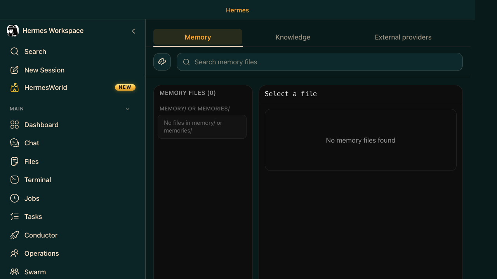
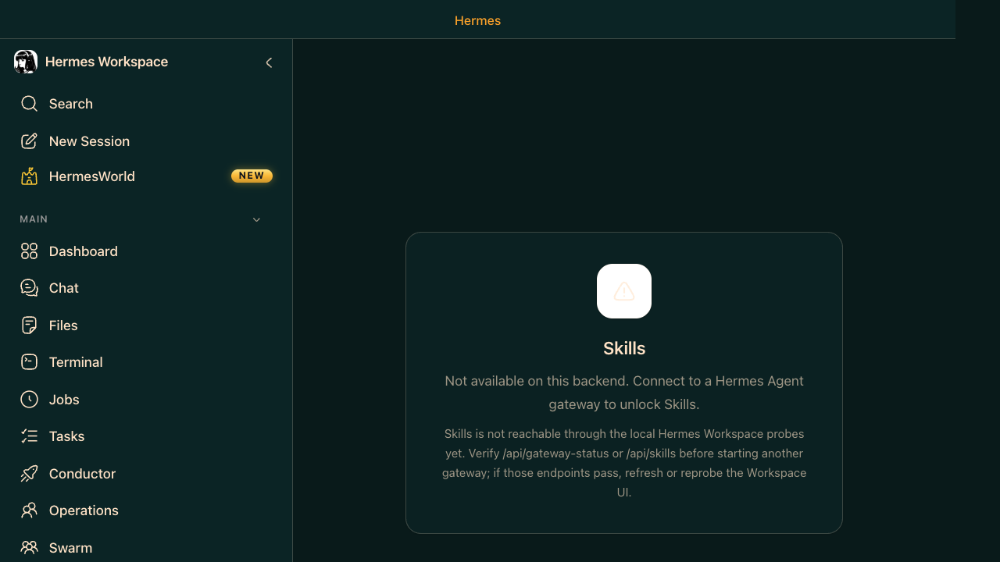

Section 10
⚡ Layer 2 · Hermes Agent
Memory & Skills — The Learning Loop
ELI10
Memory is what Hermes knows about you — facts from past conversations, stored in MEMORY.md, FTS5-indexed so they're searchable across sessions. Skills are reusable how-to guides (SKILL.md files) that teach Hermes specific procedures. Browse 2,000+ from the community hub, or write your own. Both update automatically as you work.
⚡ Hermes Agent — How Memory Works
- MEMORY.md — your personal memory file at
~/.hermes/MEMORY.md; Hermes reads and updates it each session - USER.md — a model of who you are, built by Hermes over time (work patterns, preferences, context)
- FTS5 indexing — all memory full-text searchable across every past session
- LLM summarization — long memory periodically compressed to stay useful
- External providers — optionally connect Honcho, Mem0, or other memory backends
🖥️ Hermes Workspace — Memory Browser
- Browse tab — see all memory entries with timestamps
- Search tab — full-text search across all memory
- Live editor — edit MEMORY.md directly in the browser with markdown preview
- Edit button — inline editing of individual memory entries

Hermes Workspace · Memory · Browse / Search tabs, live markdown editor

Hermes Workspace · Skills · Marketplace with 2,000+ skills, origin badges, source filters
Just Show Me — Memory & Skills in Action
You — teach Hermes about you
Do this
Use this prompt in the appropriate chat, terminal, or field.
Paste into chat
Remember these facts about me and my project:
- I work on a Jira/Confluence reporting tool in Python
- I prefer concise responses with code examples over long explanations
- My Jira project key is ACME, Confluence space is ACMETEAM
- I deploy to production on Fridays only
Save these to my memory.
Expected Result: Hermes stores the supplied facts in memory and can later recall them in relevant conversation context.
You — install and use a skill
Do this
Use this prompt in the appropriate chat, terminal, or field.
Paste into chat
Find and install a skill for GitHub PR workflows. Then use it to create a PR checklist for the changes in this session.
Expected Result: The skill is discovered and installed for the requested workflow, and the agent can invoke it through the relevant skill command or slash-style usage.
Terminal — browse and install skills
Do this
Use this prompt in the appropriate chat, terminal, or field.
Paste into chat
hermes skills search github pr
hermes skills install official/github/pr-workflow
# Then use it in chat with:
# /pr-workflow
Expected Result: The terminal example shows the skill search and install command sequence that would expose the command in the agent environment.
You — create a custom skill
Do this
Use this prompt in the appropriate chat, terminal, or field.
Paste into chat
Create a custom skill called 'jira-sprint-report' that:
1. Fetches current sprint data from Jira (project: ACME)
2. Calculates velocity, completion rate, and top blockers
3. Formats as a Confluence report
4. Publishes to the ACMETEAM space
Save it as a SKILL.md file in ~/.hermes/skills/ so I can invoke it with /jira-sprint-report.
Expected Result: A custom SKILL.md file is created in the configured skills directory and is ready to be invoked with the requested skill name.
You — review and refine memory
Do this
Use this prompt in the appropriate chat, terminal, or field.
Paste into chat
Review my memory and remove anything outdated or contradictory. Then add a new rule: I prefer all architecture discussions to start with a short risk summary, then tradeoffs, then a recommendation.
Also update my SOUL.md to reflect that I value clarity, directness, and pragmatic engineering over hype.
Expected Result: Memory review removes stale or contradictory facts and leaves the updated preference or persona state in place for subsequent sessions.
⚡Never put secrets in memory: MEMORY.md is readable plaintext. API keys and passwords belong in
~/.hermes/.env.⚡Skills are slash commands: Every installed skill becomes a
/skill-name command in chat. Run /jira-sprint-report to invoke your custom skill instantly.⚡Memory audit: Say "review my memory and clean up anything outdated" periodically. Stale facts cause subtle mistakes in long-running sessions.
⚡SOUL.md is the global persona file at
~/.hermes/SOUL.md — define Hermes' default voice, communication style, and priorities here. Applied to every session.